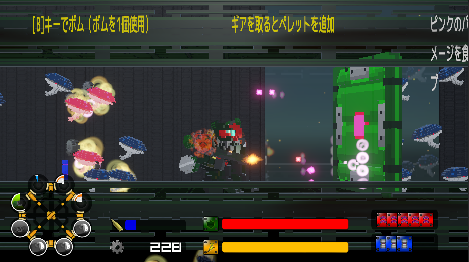
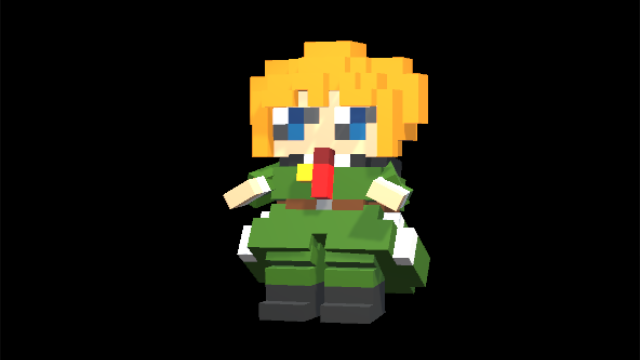
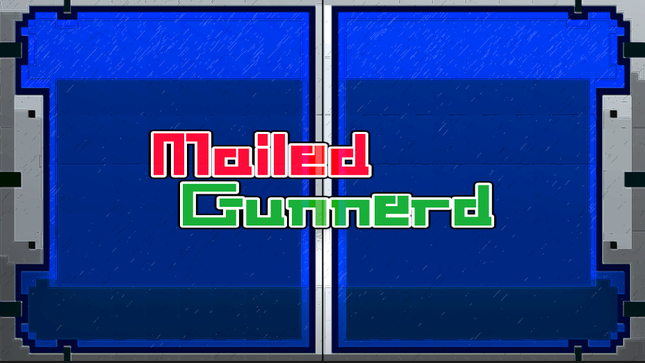

|
サイドビューロボットアクションゲーム
「Mailed Gunnerd（メイルド ガンナード）」
敵は強襲機雷「Mシリーズ」
ナノテクノロジーにより自動生産されるMシリーズを倒しながら与えられたミッションをクリアせよ！！
操作方法
キーボード
[Space][Enter][NumpadEnter]：決定
[Esc]：キャンセル
アクション時
[WASD][矢印キー]の左右：自機の移動
[WASD][矢印キー]の上下：ウェストマシンガンの上下
[Space]：ジャンプ、押しっぱなしで飛行（黄色のブーストゲージを使用）
[Z]：ドライブモード、ボタンを押した後に左右を押すと左右を離すまでダッシュ（黄色のブーストゲージを使用）
[X]：左下のサブウェポンを切り替え
[C]：ガード、ガードは背面の攻撃には無効
[V]：ランスチャージ、壁の破壊効果あり
[B]：ボムの使用、右下のボムアイコンがありボムゲージが緑の時に使用可能
XBOXコントローラー（コントローラーはXBOXコントローラーのみ使用可能）
[A]：決定
[B]：キャンセル
アクション時
[左スティック][十字パッド]の左右：自機の移動
[左スティック][十字パッド]の上下：ウェストマシンガンの上下
[A]：ジャンプ、押しっぱなしで飛行（黄色のブーストゲージを使用）
[B]：ドライブモード、ボタンを押した後に左右を押すと左右を離すまでダッシュ（黄色のブーストゲージを使用）
[R]：左下のサブウェポンを切り替え
[L]：ガード、ガードは背面の攻撃には無効
[X]：ランスチャージ、壁の破壊効果あり
[Y]：ボムの使用、右下のボムアイコンがありボムゲージが緑の時に使用可能
敵の攻撃のダメージは少ないがブーストゲージを失ってしまう
ブーストゲージはジャンプやドライブモードを使用していないと回復する

移動できるルートが無くなったら壁を疑ってみよう
壊せる壁ならランスチャージで破壊可能
ランスチャージを使用すると装備中のサブウェポンのゲージを半分、ブーストゲージを半分使用するので気をつけよう
サブウェポンは使い捨て。敵を倒してドロップしたギアを拾うと資材（ペレット）を獲得し、ペレットを100個使うと自動的にサブウェポンを獲得する。ルートを進みながらペレットを集めよう
ガルム-4EX
ナノテクノロジーで武器を自動生産する改良型ドラスティックメイル
自動攻撃を搭載したことで訓練の浅い者でも操縦できるようにしたというのだが
Mシリーズ
自動生産、AIにより自動的に標的を見つけ近づいて爆破する強襲機雷
資材があれば何度でも再生産される

ロイ・クレイヴン
傭兵部隊「ガンナー隊」の7番。戦乱に巻き込まれ故郷を守るために志願する
グレッグ・エルガー隊長
正規軍、大佐。ガンナー隊の隊長を任されているとは言うが、他から見れば左遷
ティナ・フランシス
正規軍、通信兵。傭兵部隊に通信を任せることはできないので正規軍から出向している

サイドビューロボットアクション
OS : Windows
プラットフォーム : 未定
発売日 : 未定（2025年 近日無料α版公開）
価格 : 未定
|
|
{kind=link}
{kind=link}
{kind=link}
{kind=link}
{kind=link}
{kind=link}
{kind=link}
{kind=link}
{kind=link}
{kind=link}
{kind=link}